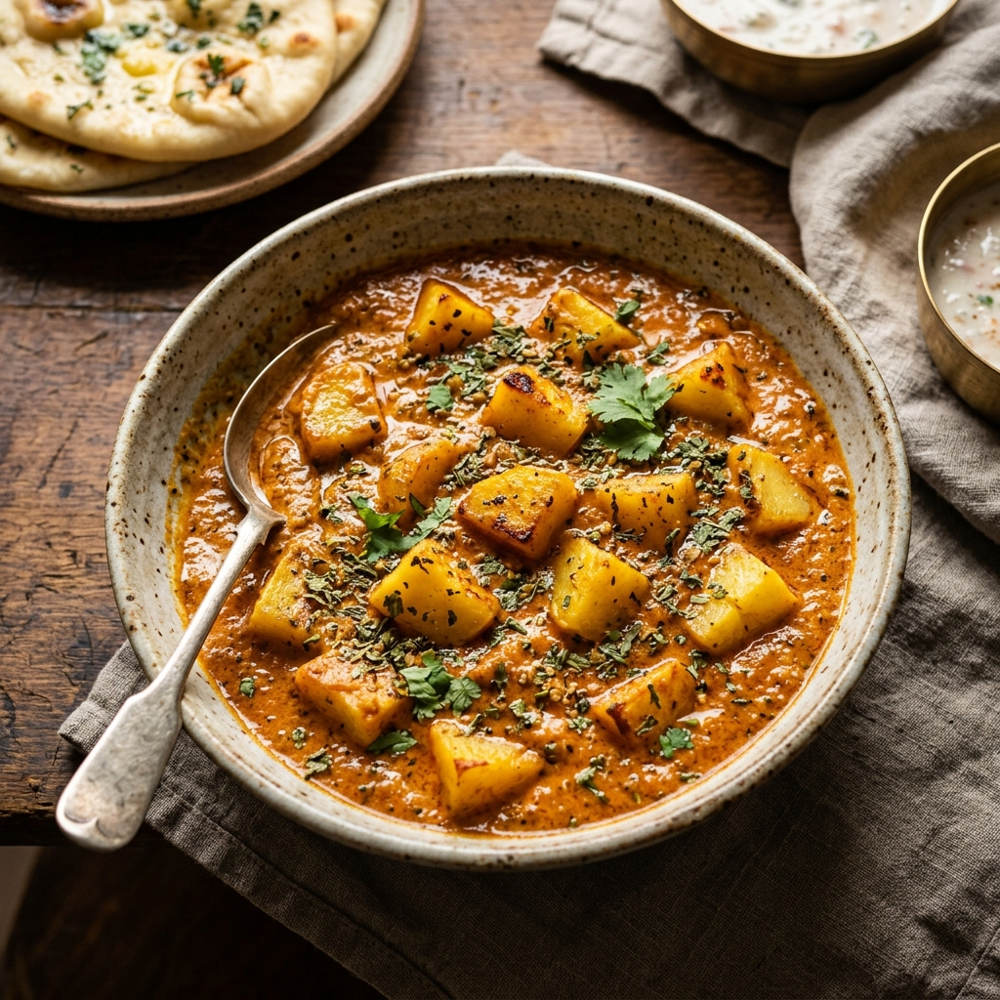

Curries
Aloo Masala Curry (Creamy Tomato Gravy)
A rich, creamy potato curry made with a spiced tomato-coconut-cashew-poppy-seed gravy. Perfectly balanced, aromatic, and comforting. An excellent side dish for flatbreads or rice.
Prep Time
15 mins
Cook Time
30 mins
Total Time
45 mins
Servings
3–4
Instructions
- Boil the potatoes: Pressure cook 300 g potatoes for 3 whistles until tender. Once cooled, peel them and cut into medium-sized cubes. Set aside.
- Grind the masala paste: Blend the 2 tomatoes, coconut powder, cashews, and poppy seeds in a blender until it forms a very smooth, consistent paste.
- Temper whole spices: Heat 3–4 tbsp of oil in a pan. Add the cumin seeds, cinnamon stick, cloves, and cardamom pods. Sauté for a few seconds until aromatic.
- Sauté aromatics: Add the finely chopped onion and slit green chilies. Sauté until the onions turn golden brown.
- Cook the gravy: Add the blended tomato-coconut-cashew-poppy paste. Cook on medium heat, stirring regularly, until the oil separates from the masala.
- Add spices: Stir in the turmeric powder, red chili powder, roasted cumin powder, and salt. Cook for another 2–3 minutes.
- Combine and simmer: Add the boiled potato cubes and pour in enough water to reach your preferred gravy consistency. Mix gently, cover, and simmer for 5–7 minutes.
- Finish with Kasuri Methi: Crush the kasuri methi between your palms, stir it in, and turn off the heat. Serve hot.